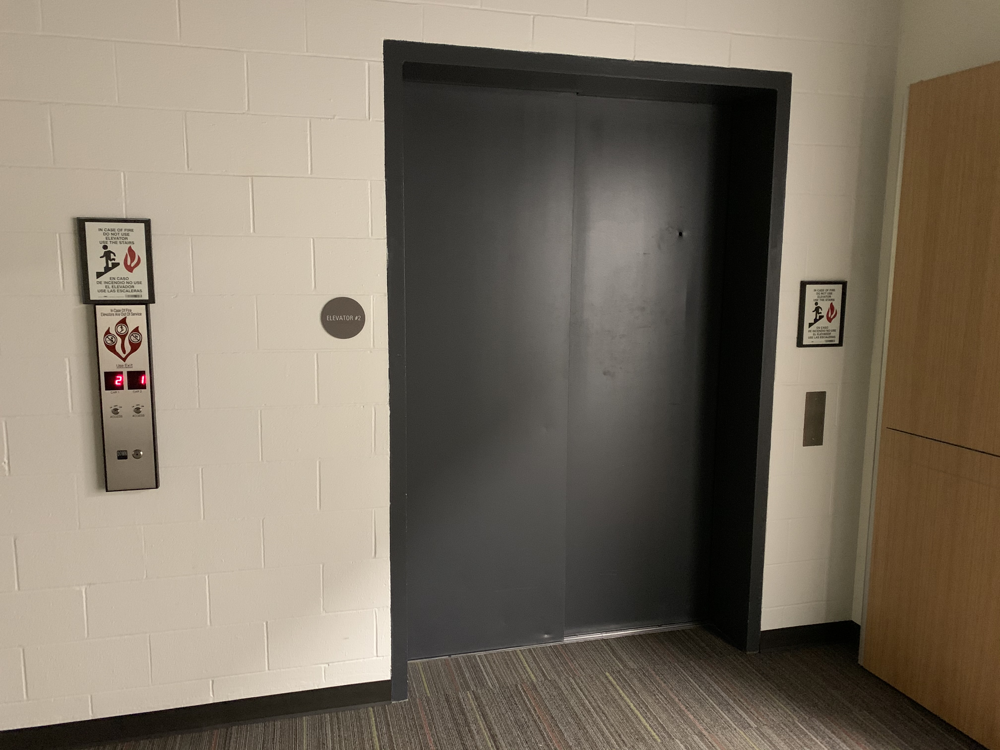
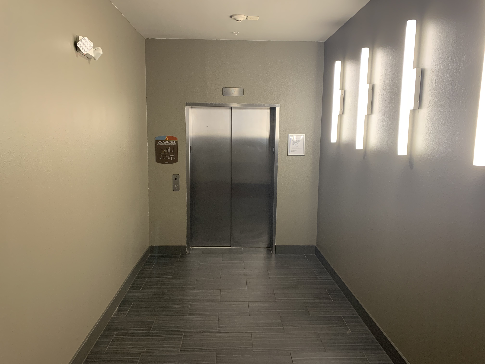
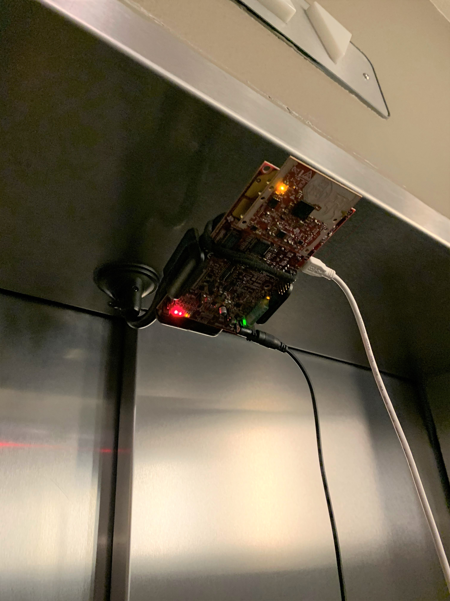

Introduction
The objective of this experiment is to showcase the capabilities of the IWR6843 mmWave Sensor in detecting approaching objects for elevator doors. In late 2019 the American Society of Mechanical Engineers (ASME) revised their elevator safety code to include stipulations for detecting approaching objects and bodies. Traditional sensors used in elevator doors only detect objects in the elevator's doorway while providing virtually no means for detection of either approaching objects or nearby bodies. Chance occurrences such as a hurried passenger or wandering pet present a risk for a quickly closing elevator door.

Requirements (ASME A17.1-2019/CSA B44:19)
The ASME A17.1-2019/ Safety Code for Elevators and Escalators (2.13.5.3) requires that objects and bodies approaching the elevator are detected before the door fully closes. The safety code stipulates that the elevator sensor must detect approaching objects up to 500 mm (20 in.) away from the elevator door. The code also states that these the elevator sensor must detect objects that are traveling at a speed of up to 1 m/s (3 ft/s). The diagram below illustrates the requirement in a 3D space.

Setup
Physical Setup
The physical setup includes information about the scene such as the distance between the target and the sensor antenna, the type of target used, hardware setup and any other physical considerations e.g. non-reflective surfaces or use of anechoic chamber etc. The physical setup used for this experiment is given below:
The scene was landing area of an ordinary passenger elevator as shown below. The elevator used was about 210 cm (~7 ft.) tall with a door opening that was 120 cm (~4 ft.) wide. The landing area was 500 cm (~16 ft.) long and 230 cm (7.5 ft.) wide.

An IWR6843ODS EVM was connected to an Industrial Carrier Board (MMWAVEICBOOST) and mounted in the center of the elevator doorway as shown below. It was then given a down-tilt of about 60 degrees.

Why ODS?
The IWR6843ODS antenna is recommended because it is better suited for Elevator Door applications than the IWR6843ISK antenna. The IWR6843ODS features angular improvements while trading off maximum distance. Since the required detection zone is 50 cm this is a trivial compromise. If a detection range of more than 500 cm is desired then the IWR6843ISK should be considered. For more information on antenna performance please see the Antenna Database in the mmWave Industrial Toolbox where data on all of the mmWave EVMs have been compiled.
Software setup
The 68xx - Door Activation and Protection Sensor Lab from the mmWave Industrial Toolbox was used for evaluation. The software uses the group tracking feature to gauge a moving object's speed and trajectory. A modified visualizer showing post-processed object data was used and is shown below on the left. Then a simple webcam was used to verify the results which is on the right. The blue zone and blue line each represent the area of interest as per the ASME/CSA Safety Requirement, (50 cm away from the sensor).

Results
The sensor proved to be able to reliably and accurately track an approaching person. The below recording shows a person approaching the elevator at a normal walking speed. Worth noting is that the sensor was able to detect the person approaching at a distance of 3 m away from the sensor, six times further than the 50 cm stipulated in the ASME/CSA Safety Requirement.

Furthermore the sensor showed the same performance for a person leaving the elevator space. Detection begins at the placement of the sensor and continues out to 3 m.

The below recording, which shows a person waiting in the landing area, illustrates the sensor's wide field of view. The sensor is able to provide coverage from wall-to-wall about 1m each side. The recording also shows how the sensor's group tracking feature can reliably keep a person's track even in an otherwise idle situation.

Conclusion
This experiment sought to determine compliance of TI mmWave Sensors with the new ASME/CSA Safety Requirement. The results above demonstrate mmWave's particular aptitude for achieving this as its detection capability far exceeds what is mandated. This would serve well to avoid elevator-related accidents and injuries as safety and protection needs become more ubiquitous. Moreover, improved performance would serve lower the prevalence of elevator damage which reduces the need for costly call-outs and repairs. While TI mmWave Sensors represent an alternative to traditional elevator door sensors, they also meet several engineering demands as a single sensor solution.